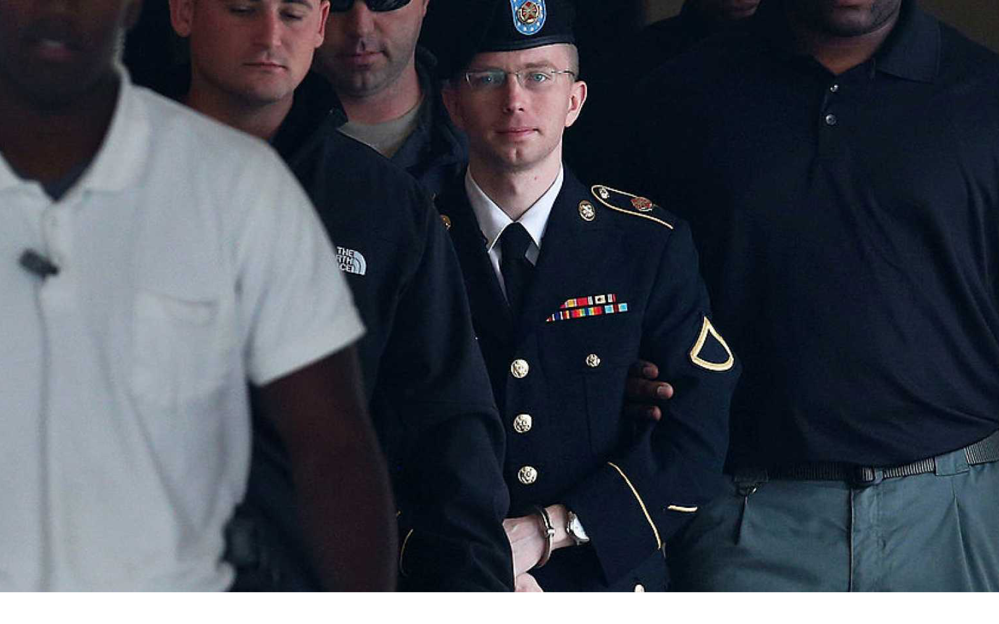
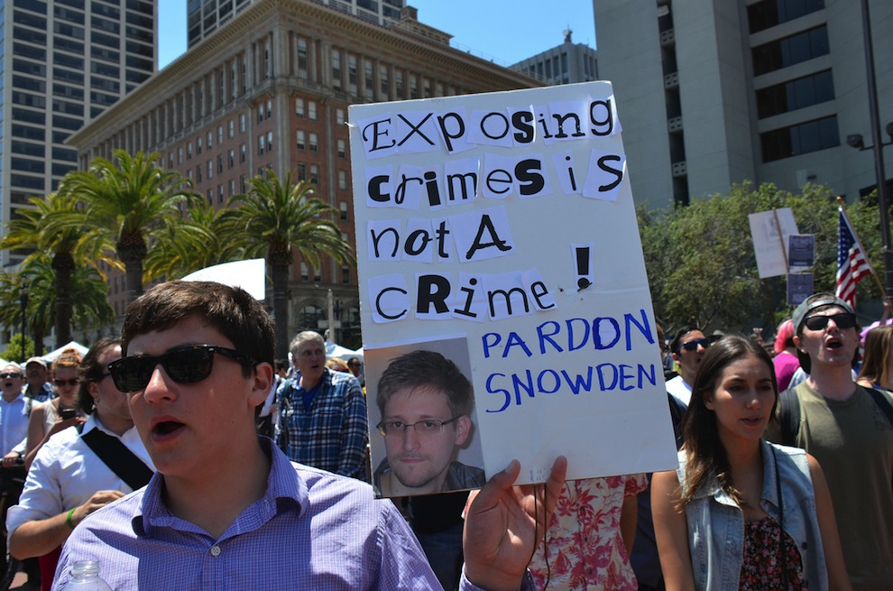
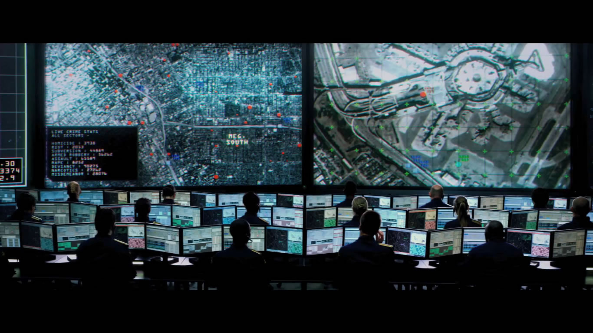
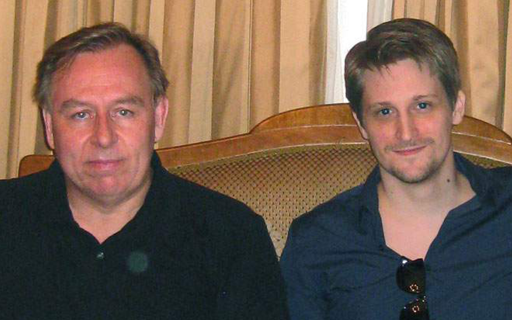
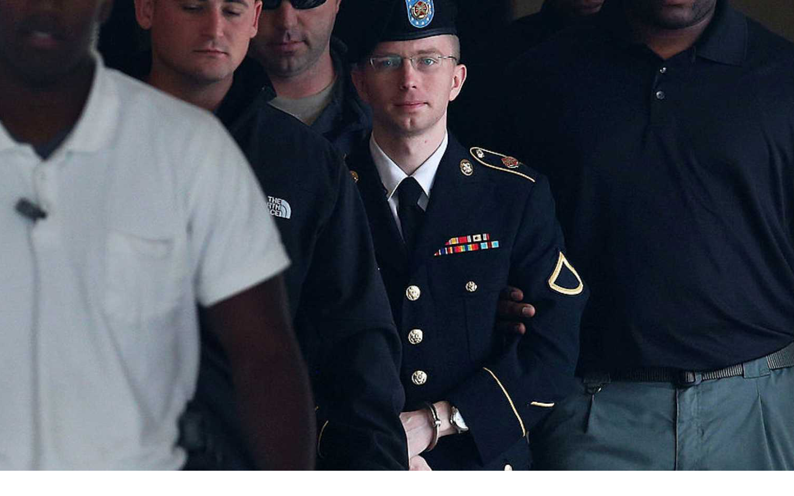
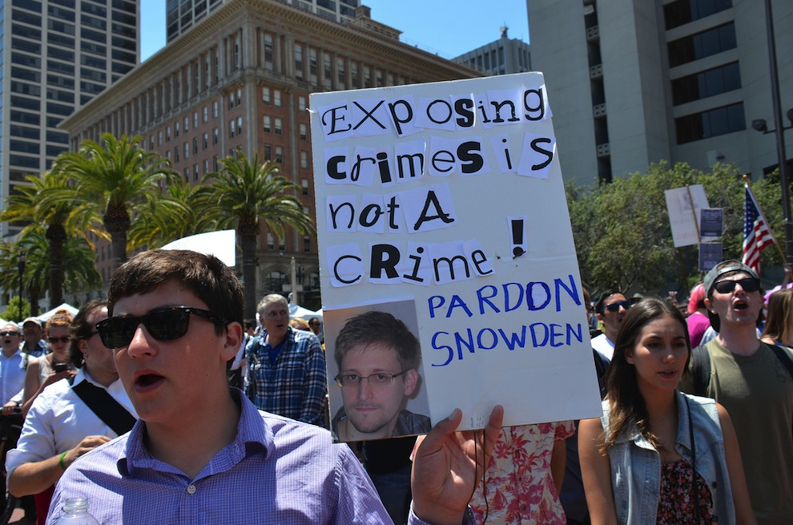
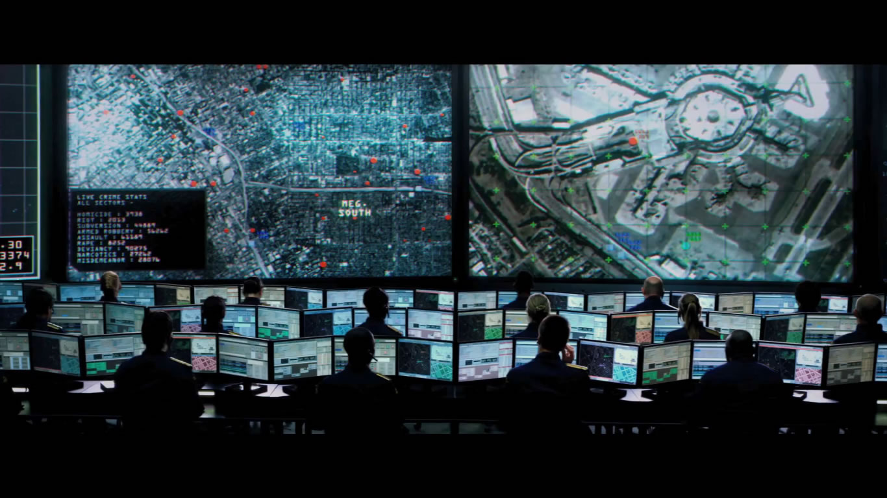
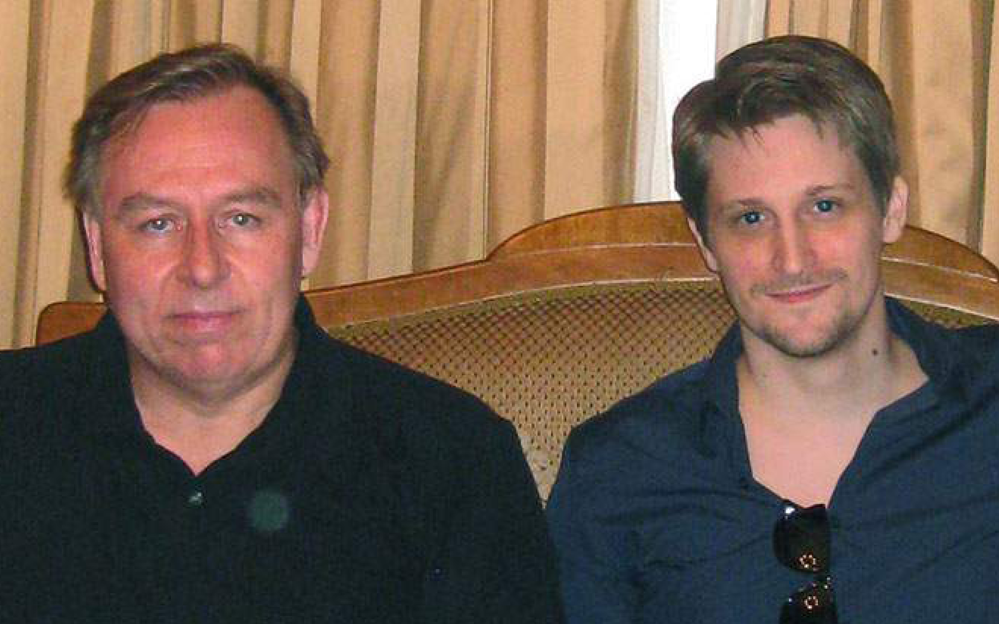

[Edward Snowden was interviewed over several days in Hong Kong by Glenn Greenwald and Ewen MacAskill.]
Q: Why did you decide to become a whistleblower?
A: "The
NSA has built an infrastructure that allows it to intercept almost everything. With this capability, the vast majority of human communications are automatically ingested without targeting. If I wanted to see your emails or your wife's phone, all I have to do is use
intercepts. I can get your emails, passwords, phone records, credit cards.
"I don't want to live in a society that does these sort of things. I do not want to live in
a world where everything I do and say is recorded. That is not something I am willing to support or live under."
Q: But isn't there a need for surveillance to try to reduce the chances of terrorist attacks such as
Boston?
A: "We have to decide why terrorism is a new threat. There has always been terrorism. Boston was a criminal act. It was not about surveillance but good, old-fashioned police work. The police are very good at what they do."
Q: Do you see yourself as another Bradley Manning?
A: "
Manning was a classic whistleblower. He was inspired by the public good."
Q: Do you think what you have done is a crime?
A: "We have seen enough criminality on the part of government. It is hypocritical to make this
allegation
against me. They have narrowed the public sphere of influence."
Q: What do you think is going to happen to you?
A: "Nothing good."
Q: What do the leaked documents reveal?
A: "That the NSA routinely lies in response to congressional inquiries about the scope of surveillance in America. We do have the tools and I have maps showing where people have been scrutinized most. We collect more digital communications from America than we do from the Russians."
Q: Is it possible to put security in place to protect against state surveillance?
A: "You are not even aware of what is possible. The extent of their
capabilities is horrifying. We can plant bugs in machines. Once you go on the network, I can identify your machine. You will never be safe whatever protections you put in place."
Q: Does your family know you are planning this?
A: "No. My
family does not know what is happening… My primary fear is that they will come after my family, my friends, my partner. Anyone I have a relationship with. I will have to live with that for the rest of my life.
I am not going to be able to communicate with them. They [the authorities] will act aggressively against anyone who has known me. That keeps me up at night."
Q: When did you decide to leak the documents?
A: "You see things that may be disturbing. When you see everything, you realize that some of these things are abusive. The awareness of wrong-doing builds up. There was not one morning when I woke up [and decided this is it]. It was a natural process.”
Q: What is your reaction to Obama denouncing the leaks on Friday while welcoming a debate on the balance between security and openness?
A: "My immediate reaction was he was having difficulty in defending it himself. He was trying to defend the unjustifiable and he knew it."
Q: What about the response in general to the disclosures?
A: "I have been surprised and pleased to see the public has reacted so strongly in defense of these rights that are being suppressed in the name of security.
The response over the internet has been huge and supportive."
Q: Do you have a plan in place?
A: "The only thing I can do is sit here and hope the Hong Kong government does not deport me. My predisposition is to seek asylum in a country with shared values. The nation that most encompasses this is Iceland. They stood up for people over internet freedom. I have no idea what my future is going to be."
Q: Do you think you are probably going to end up in prison?
A: "I could not do this without accepting the risk of prison. You can't come up against the world's most powerful intelligence agencies and not accept the risk. If they want to get you, over time
they will."
Q: How to you feel now, almost a week after the first leak?
A: "I think the sense of outrage that has been expressed is justified. It has given me hope that, no matter what happens to me, the
outcome will be positive for America. I do not expect to see home again, though that is what I want."
 






